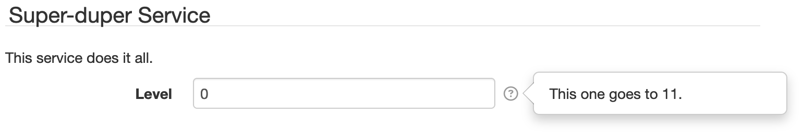
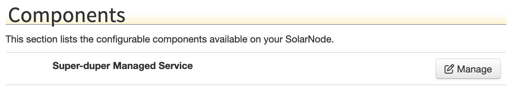
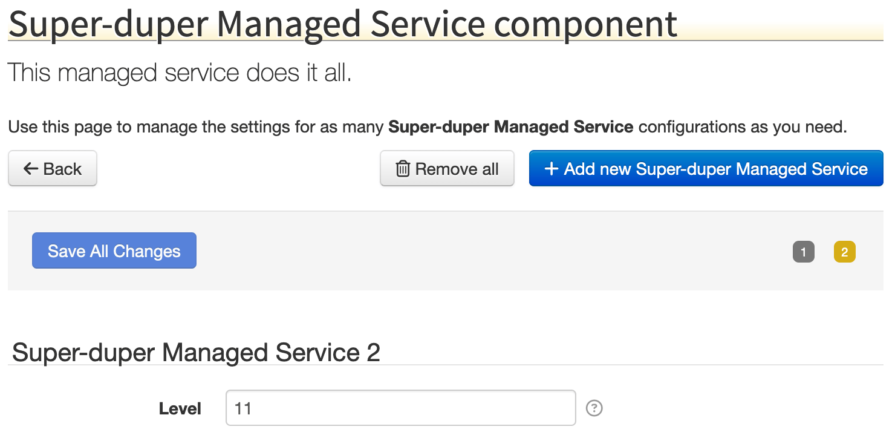

81. Gemini Blueprint Compendium¶
The Gemini Blueprint implementation provides some useful extensions that SolarNode makes frequent use of. To use the extensions you need to declare the Gemini Blueprint Compendium namespace in your Blueprint XML file, like this:
<blueprint xmlns="http://www.osgi.org/xmlns/blueprint/v1.0.0"
xmlns:xsi="http://www.w3.org/2001/XMLSchema-instance"
xmlns:osgix="http://www.eclipse.org/gemini/blueprint/schema/blueprint-compendium"
xmlns:beans="http://www.springframework.org/schema/beans"
xsi:schemaLocation="
http://www.osgi.org/xmlns/blueprint/v1.0.0
http://www.osgi.org/xmlns/blueprint/v1.0.0/blueprint.xsd
http://www.eclipse.org/gemini/blueprint/schema/blueprint-compendium
http://www.eclipse.org/gemini/blueprint/schema/blueprint-compendium/gemini-blueprint-compendium.xsd
http://www.springframework.org/schema/beans
http://www.springframework.org/schema/beans/spring-beans.xsd">
This example declares the Gemini Blueprint Compendium XML namespace prefix osgix and a related Spring Beans
namespace prefix beans. You will see those used throughout SolarNode.
81.1 Managed Properties¶
Managed Properties provide a way to use the Configuration Admin service to manage user-configurable service properties. Conceptually it is like linking a class to a set of dynamic runtime Settings: Configuration Admin provides change event and persistence APIs for the settings, and the Managed Properties applies those settings to the linked service.
Imagine you have a service class MyService with a configurable property level. We can make
that property a managed, persistable setting by adding a <osgix:managed-properties> element to
our Blueprint XML, like this:
package com.example;
import java.util.Collections;
import java.util.List;
import java.util.Map;
import net.solarnetwork.node.service.support.BaseIdentifiable;
import net.solarnetwork.settings.SettingSpecifier;
import net.solarnetwork.settings.SettingSpecifierProvider;
import net.solarnetwork.settings.SettingsChangeObserver;
import net.solarnetwork.settings.support.BasicTextFieldSettingSpecifier;
/**
* My super-duper service.
*
* @author matt
* @version 1.0
*/
public class MyService extends BaseIdentifiable
implements SettingsChangeObserver, SettingSpecifierProvider {
private int level;
@Override
public String getSettingUid() {
return "com.example.MyService"; // (1)!
}
@Override
public List<SettingSpecifier> getSettingSpecifiers() {
return Collections.singletonList(
new BasicTextFieldSettingSpecifier("level", String.valueOf(0)));
}
@Override
public void configurationChanged(Map<String, Object> properties) {
// the settings have changed; do something
}
public int getLevel() {
return level;
}
public void setLevel(int level) {
this.level = level;
}
}
- The setting UID will be the Configuration Admin PID
title = Super-duper Service
desc = This service does it all.
level.key = Level
level.desc = This one goes to 11.
<?xml version="1.0" encoding="UTF-8"?>
<blueprint xmlns="http://www.osgi.org/xmlns/blueprint/v1.0.0"
xmlns:xsi="http://www.w3.org/2001/XMLSchema-instance"
xmlns:osgix="http://www.eclipse.org/gemini/blueprint/schema/blueprint-compendium"
xmlns:beans="http://www.springframework.org/schema/beans"
xsi:schemaLocation="
http://www.osgi.org/xmlns/blueprint/v1.0.0
http://www.osgi.org/xmlns/blueprint/v1.0.0/blueprint.xsd
http://www.eclipse.org/gemini/blueprint/schema/blueprint-compendium
http://www.eclipse.org/gemini/blueprint/schema/blueprint-compendium/gemini-blueprint-compendium.xsd
http://www.springframework.org/schema/beans
http://www.springframework.org/schema/beans/spring-beans.xsd">
<service>
<interfaces>
<value>net.solarnetwork.settings.SettingSpecifierProvider</value>
</interfaces>
<bean class="com.example.MyService"><!-- (1)! -->
<osgix:managed-properties
persistent-id="com.example.MyService"
autowire-on-update="true"
update-method="configurationChanged"/>
<property name="messageSource">
<bean class="org.springframework.context.support.ResourceBundleMessageSource">
<property name="basenames" value="com.example.MyService"/>
</bean>
</property>
</bean>
</service>
</blueprint>
- You nest the
<osgi:managed-properties>element within the actual service<bean>element you want to apply the managed settings on.- note how the
persistent-idattribute value matches thegetSettingsUid()value inMyService.java - the
autowire-on-updatemethod toggles having the Managed Properties automatically applied by Gemini Blueprint; you can set tofalseand provide anupdate-methodif you want to handle changes yourself - the
update-methodattribute is optional; it provides a way for the service to be notified after the Configuration Admin settings have been applied.
- note how the
When this plugin is deployed in SolarNode, the component will appear on the main Settings page and offer a configurable Level setting, like this:

81.2 Managed Service Factory¶
The Managed Service Factory service provide a way to use the Configuration Admin service to manage multiple copies of a user-configurable service's properties. Conceptually it is like linking a class to a set of dynamic runtime Settings, but you can create as many independent copies as you like. Configuration Admin provides change event and persistence APIs for the settings, and the Managed Service Factory applies those settings to each linked service instance.
Imagine you have a service class ManagedService with a configurable property level. We can make
that property a factory of managed, persistable settings by adding a
<osgix:managed-service-factory> element to our Blueprint XML, like this:
package com.example;
import java.util.Collections;
import java.util.List;
import java.util.Map;
import net.solarnetwork.node.service.support.BaseIdentifiable;
import net.solarnetwork.settings.SettingSpecifier;
import net.solarnetwork.settings.SettingSpecifierProvider;
import net.solarnetwork.settings.SettingsChangeObserver;
import net.solarnetwork.settings.support.BasicTextFieldSettingSpecifier;
/**
* My super-duper managed service.
*
* @author matt
* @version 1.0
*/
public class ManagedService extends BaseIdentifiable
implements SettingsChangeObserver, SettingSpecifierProvider {
private int level;
@Override
public String getSettingUid() {
return "com.example.ManagedService"; // (1)!
}
@Override
public List<SettingSpecifier> getSettingSpecifiers() {
return Collections.singletonList(
new BasicTextFieldSettingSpecifier("level", String.valueOf(0)));
}
@Override
public void configurationChanged(Map<String, Object> properties) {
// the settings have changed; do something
}
public int getLevel() {
return level;
}
public void setLevel(int level) {
this.level = level;
}
}
- The setting UID will be the Configuration Admin factory PID
title = Super-duper Managed Service
desc = This managed service does it all.
level.key = Level
level.desc = This one goes to 11.
<?xml version="1.0" encoding="UTF-8"?>
<blueprint xmlns="http://www.osgi.org/xmlns/blueprint/v1.0.0"
xmlns:xsi="http://www.w3.org/2001/XMLSchema-instance"
xmlns:osgix="http://www.eclipse.org/gemini/blueprint/schema/blueprint-compendium"
xmlns:beans="http://www.springframework.org/schema/beans"
xsi:schemaLocation="
http://www.osgi.org/xmlns/blueprint/v1.0.0
http://www.osgi.org/xmlns/blueprint/v1.0.0/blueprint.xsd
http://www.eclipse.org/gemini/blueprint/schema/blueprint-compendium
http://www.eclipse.org/gemini/blueprint/schema/blueprint-compendium/gemini-blueprint-compendium.xsd
http://www.springframework.org/schema/beans
http://www.springframework.org/schema/beans/spring-beans.xsd">
<bean id="messageSource" class="org.springframework.context.support.ResourceBundleMessageSource">
<property name="basenames" value="com.example.ManagedService"/>
</bean>
<service interface="net.solarnetwork.settings.SettingSpecifierProviderFactory"><!-- (1)! -->
<bean class="net.solarnetwork.settings.support.BasicSettingSpecifierProviderFactory">
<property name="displayName" value="Super-duper Managed Service"/>
<property name="factoryUid" value="com.example.ManagedService"/><!-- (2)! -->
<property name="messageSource" ref="messageSource"/>
</bean>
</service>
<osgix:managed-service-factory
factory-pid="com.example.ManagedService"
autowire-on-update="true"
update-method="configurationChanged"><!-- (3)! -->
<osgix:interfaces>
<beans:value>net.solarnetwork.settings.SettingSpecifierProvider</beans:value>
</osgix:interfaces>
<osgix:service-properties>
<beans:entry key="settingPid" value="com.example.ManagedService"/>
</osgix:service-properties>
<bean class="com.example.ManagedService">
<property name="messageSource" ref="messageSource"/>
</bean>
</osgix:managed-service-factory>
</blueprint>
- The
SettingSpecifierProviderFactoryservice is what makes the managed service factory appear as a component in the SolarNode Settings UI. - The
factoryUiddefines the Configuration Admin factory PID and the Settings UID. - You add a
<osgix:managed-service-factory>element in your Blueprint XML, with a nested<bean>"template" within it. The template bean will be instantiated for each service instance instantiated by the Managed Service Factory.- note how the
factory-pidattribute value matches thegetSettingsUid()value inManagedService.javaand thefactoryUiddeclared in #2. - the
autowire-on-updatemethod toggles having the Managed Properties automatically applied by Gemini Blueprint; you can set tofalseand provide anupdate-methodif you want to handle changes yourself - the
update-methodattribute is optional; it provides a way for the service to be notified after the Configuration Admin settings have been applied.
- note how the
When this plugin is deployed in SolarNode, the managed component will appear on the main Settings page like this:

After clicking on the Manage button next to this component, the Settings UI allows you to create any number of instances of the component, each with their own setting values. Here is a screen shot showing two instances having been created:
